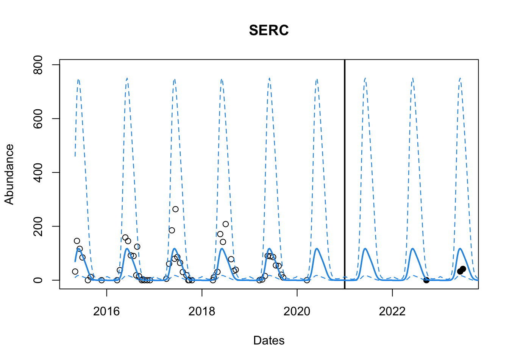
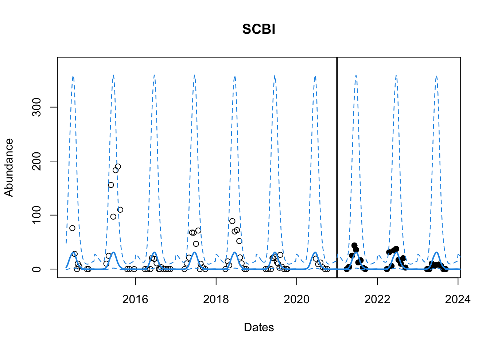

library(mvtnorm)
library(laGP)
library(hetGP)
library(ggplot2)GP_Solutions
Libraries
HetGP (sin wave eg)
# Your turn
set.seed(26)
n <- 8 # number of points
X <- matrix(seq(0, 2*pi, length= n), ncol=1) # build inputs
y <- 5*sin(X) + rnorm(n, 0 , 2) # response with some noise
# Predict on this set
XX <- matrix(seq(-0.5, 2*pi + 0.5, length= 100), ncol=1)
# Data visualization
plot(X, y)# ------ Solutions ------------------------------
het_fit <- hetGP::mleHetGP(X, y)
het_pred <- predict(het_fit, XX)
mean <- het_pred$mean
s2 <- het_pred$sd2 + het_pred$nugs
yy <- 5*sin(XX)
par(mfrow = c(1, 1), mar = c(4, 4, 4, 1))
plot(X, y, ylim = c(-10, 10))
lines(XX, yy, col = 3)
lines(XX, mean, col = 2)
lines(XX, mean + 2 * sqrt(s2), col = 4)
lines(XX, mean - 2 * sqrt(s2), col = 4)# You can check the nuggets (each one will be different)
nugs <- het_pred$nugs
summary(nugs) Min. 1st Qu. Median Mean 3rd Qu. Max.
3.904 3.927 3.931 3.936 3.949 3.971 Challenges
We need to load the data and the functions
# Pulling the data from the NEON data base.
target <- readr::read_csv("https://data.ecoforecast.org/neon4cast-targets/ticks/ticks-targets.csv.gz", guess_max = 1e1)Rows: 601 Columns: 5
── Column specification ────────────────────────────────────────────────────────
Delimiter: ","
chr (3): site_id, variable, iso_week
dbl (1): observation
date (1): datetime
ℹ Use `spec()` to retrieve the full column specification for this data.
ℹ Specify the column types or set `show_col_types = FALSE` to quiet this message.# transforms y
f <- function(x) {
y <- log(x + 1)
return(y)
}
# This function back transforms the input argument
fi <- function(y) {
x <- exp(y) - 1
return(x)
}
# This function tells us the iso-week number given the date
fx.iso_week <- function(datetime){
# Gives ISO-week in the format yyyy-w## and we extract the ##
x1 <- as.numeric(stringr::str_sub(ISOweek::ISOweek(datetime), 7, 8)) # find iso week #
return(x1)
}
fx.sin <- function(datetime, f1 = fx.iso_week){
# identify iso week#
x <- f1(datetime)
# calculate sin value for that week
x2 <- (sin(2*pi*x/106))^2
return(x2)
}Fit a GP Model for the location “SERC” i.e. site_number = 7.
Just change site = 7
site_number <- 7 # (site_number = 4) for the other challenge
# Obtaining site name
site_names <- unique(target$site_id)
# Subsetting all the data at that location
df <- subset(target, target$site_id == site_names[site_number])
# extracting only the datetime and obs columns
df <- df[, c("datetime", "observation")]
# Selecting a date before which we consider everything as training data and after this is testing data.
cutoff = as.Date('2020-12-31')
df_train <- subset(df, df$datetime <= cutoff)
df_test <- subset(df, df$datetime > cutoff)
# Setting up iso-week and sin wave predictors by calling the functions
X1 <- fx.iso_week(df_train$datetime) # range is 1-53
X2 <- fx.sin(df_train$datetime) # range is 0 to 1
# Centering the iso-week by diving by 53
X1c <- X1/ 53
# We combine columns centered X1 and X2, into a matrix as our input space
X <- as.matrix(cbind.data.frame(X1c, X2))
head(X) X1c X2
[1,] 0.3584906 0.8150439
[2,] 0.3962264 0.8974272
[3,] 0.4528302 0.9782005
[4,] 0.5094340 0.9991219
[5,] 0.6226415 0.8587536
[6,] 0.6792453 0.7150326y_obs <- df_train$observation
y <- f(y_obs) # transform y
# A very small value for stability
eps <- sqrt(.Machine$double.eps)
# Priors for theta and g.
d <- darg(list(mle=TRUE, min =eps, max=5), X)
g <- garg(list(mle=TRUE, min = eps, max = 1), y)
# Fitting a GP with our data, and some starting values for theta and g
gpi <- newGPsep(X, y, d = 0.1, g = 1, dK = T)
# Jointly infer MLE for all parameters
mle <- jmleGPsep(gpi, drange = c(d$min, d$max), grange = c(g$min, g$max),
dab = d$ab, gab= g$ab)
# Create a grid from start date in our data set to one year in future (so we forecast for next season)
startdate <- as.Date(min(df$datetime))# identify start week
grid_datetime <- seq.Date(startdate, Sys.Date() + 365, by = 7) # create sequence
# Build the input space for the predictive space (All weeks from 04-2014 to 07-2025)
XXt1 <- fx.iso_week(grid_datetime)
XXt2 <- fx.sin(grid_datetime)
# Standardize
XXt1c <- XXt1/53
# Store inputs as a matrix
XXt <- as.matrix(cbind.data.frame(XXt1c, XXt2))
# Make predictions using predGP with the gp object and the predictive set
ppt <- predGPsep(gpi, XXt)
# Now we store the mean as our predicted response i.e. density along with quantiles
yyt <- ppt$mean
q1t <- ppt$mean + qnorm(0.025,0,sqrt(diag(ppt$Sigma))) #lower bound
q2t <- ppt$mean + qnorm(0.975,0,sqrt(diag(ppt$Sigma))) # upper bound
# Back transform our data to original
gp_yy <- fi(yyt)
gp_q1 <- fi(q1t)
gp_q2 <- fi(q2t)
# Plot the observed points
plot(as.Date(df$datetime), df$observation,
main = paste(site_names[site_number]), col = "black",
xlab = "Dates" , ylab = "Abundance",
# xlim = c(as.Date(min(df$datetime)), as.Date(cutoff)),
ylim = c(min(df_train$observation, gp_yy, gp_q1), max(df_train$observation, gp_yy, gp_q2)* 1.05))
# Plot the testing set data
points(as.Date(df_test$datetime), df_test$observation, col ="black", pch = 19)
# Line to indicate seperation between train and test data
abline(v = as.Date(cutoff), lwd = 2)
# Add the predicted response and the quantiles
lines(grid_datetime, gp_yy, col = 4, lwd = 2)
lines(grid_datetime, gp_q1, col = 4, lwd = 1.2, lty = 2)
lines(grid_datetime, gp_q2, col = 4, lwd = 1.2, lty =2)
# Obtain true observed values for testing set
yt_true <- f(df_test$observation)
# FInd corresponding predictions from our model in the grid we predicted on
yt_pred <- yyt[which(grid_datetime %in% df_test$datetime)]
# calculate RMSE
rmse <- sqrt(mean((yt_true - yt_pred)^2))
rmse[1] 0.9553652Use an environmental predictor in your model. Following is a function fx.green that creates the variable given the datetime and the location.
Here is a snippet of the supporting file that you will use; You can look into the data.frame and try to plot ker for one site at a time and see what it yields.
source('code/df_spline.R') # sources the cript to make greenness predictor
head(df_green) # how the dataset looks site iso ker
1 BLAN 1 0
2 BLAN 2 0
3 BLAN 3 0
4 BLAN 4 0
5 BLAN 5 0
6 BLAN 6 0# The function to create the environmental predictor similar to iso-week and sin wave
fx.green <- function(datetime, site, site_info = df_green){
ker <- NULL
iso <- fx.iso_week(datetime) # identify iso week
df.iso <- cbind.data.frame(datetime, iso) # combine date with iso week
sites.ker <- subset(site_info, site == site)[,2:3] # obtain kernel for location
df.green <- df.iso %>% left_join(sites.ker, by = 'iso') # join dataframes by iso week
ker <- df.green$ker # return kernel
return(ker)
}- Choose a site
- set up X3 using
fx_green - Scale X3
Setting up the target dataframe
# Obtaining site name
site_names <- unique(target$site_id)
# Subsetting all the data at that location
df <- subset(target, target$site_id == site_names[site_number])
# extracting only the datetime and obs columns
df <- df[, c("datetime", "observation")]
# Selecting a date before which we consider everything as training data and after this is testing data.
cutoff = as.Date('2020-12-31')
df_train <- subset(df, df$datetime <= cutoff)
df_test <- subset(df, df$datetime > cutoff)Adding Greenness
# Choose location
site_number = 7
df_green_site2 <- subset(df_green, site == site_names[site_number])
# Setting up iso-week and sin wave predictors by calling the functions
X1 <- fx.iso_week(df_train$datetime) # range is 1-53
X2 <- fx.sin(df_train$datetime) # range is 0 to 1
# you need datetime, site name and the df_green dataset.
X3 <- fx.green(df_train$datetime, site = site_names[site_number], site_info = df_green_site2)
# Centering the iso-week by diving by 53
X1c <- X1/ 53
# Scale X3
X3c <- (X3 - min(X3))/ (max(X3)- min(X3))
# We combine columns centered X1 and X2, into a matrix as our input space
X <- as.matrix(cbind.data.frame(X1c, X2, X3c))
head(X) X1c X2 X3c
[1,] 0.3584906 0.8150439 0.84585476
[2,] 0.3962264 0.8974272 0.97749530
[3,] 0.4528302 0.9782005 0.96806621
[4,] 0.5094340 0.9991219 0.75535447
[5,] 0.6226415 0.8587536 0.23957183
[6,] 0.6792453 0.7150326 0.09822483y_obs <- df_train$observation
y <- f(y_obs) # transform y
# A very small value for stability
eps <- sqrt(.Machine$double.eps)
# Priors for theta and g.
d <- darg(list(mle=TRUE, min =eps, max=5), X)
g <- garg(list(mle=TRUE, min = eps, max = 1), y)
# Fitting a GP with our data, and some starting values for theta and g
gpi <- newGPsep(X, y, d = 0.1, g = 1, dK = T)
# Jointly infer MLE for all parameters
mle <- jmleGPsep(gpi, drange = c(d$min, d$max), grange = c(g$min, g$max),
dab = d$ab, gab= g$ab)
# Create a grid from start date in our data set to one year in future (so we forecast for next season)
startdate <- as.Date(min(df$datetime))# identify start week
grid_datetime <- seq.Date(startdate, Sys.Date() + 365, by = 7) # create sequence
# Build the input space for the predictive space (All weeks from 04-2014 to 07-2025)
XXt1 <- fx.iso_week(grid_datetime)
XXt2 <- fx.sin(grid_datetime)
XXt3 <- fx.green(grid_datetime, site = site_names[site_nunber], site_info = df_green_site2)
# Standardize
XXt1c <- XXt1/53
XXt3 <- (XXt3 - min(XXt3))/ (max(XXt3)- min(XXt3))
# Store inputs as a matrix
XXt <- as.matrix(cbind.data.frame(XXt1c, XXt2, XXt3))
# Make predictions using predGP with the gp object and the predictive set
ppt <- predGPsep(gpi, XXt)
# Now we store the mean as our predicted response i.e. density along with quantiles
yyt <- ppt$mean
q1t <- ppt$mean + qnorm(0.025,0,sqrt(diag(ppt$Sigma))) #lower bound
q2t <- ppt$mean + qnorm(0.975,0,sqrt(diag(ppt$Sigma))) # upper bound
# Back transform our data to original
gp_yy <- fi(yyt)
gp_q1 <- fi(q1t)
gp_q2 <- fi(q2t)
# Plot the observed points
plot(as.Date(df$datetime), df$observation,
main = paste(site_names[site_number]), col = "black",
xlab = "Dates" , ylab = "Abundance",
# xlim = c(as.Date(min(df$datetime)), as.Date(cutoff)),
ylim = c(min(df_train$observation, gp_yy, gp_q1), max(df_train$observation, gp_yy, gp_q2)* 1.05))
# Plot the testing set data
points(as.Date(df_test$datetime), df_test$observation, col ="black", pch = 19)
# Line to indicate seperation between train and test data
abline(v = as.Date(cutoff), lwd = 2)
# Add the predicted response and the quantiles
lines(grid_datetime, gp_yy, col = 4, lwd = 2)
lines(grid_datetime, gp_q1, col = 4, lwd = 1.2, lty = 2)
lines(grid_datetime, gp_q2, col = 4, lwd = 1.2, lty =2)# Obtain true observed values for testing set
yt_true <- f(df_test$observation)
# FInd corresponding predictions from our model in the grid we predicted on
yt_pred <- yyt[which(grid_datetime %in% df_test$datetime)]
# calculate RMSE
rmse <- sqrt(mean((yt_true - yt_pred)^2))
rmse[1] 0.9532001Fit a GP Model for all the locations (More advanced).
# GP function. This can be varied but easiest way is to just take in X, y, XX and return the predicted means and bounds.
gpfit <- function(X, y , XXt){
eps <- sqrt(.Machine$double.eps)
# Priors for theta and g.
d <- darg(list(mle=TRUE, min =eps, max=5), X)
g <- garg(list(mle=TRUE, min = eps, max = 1), y)
# Fitting a GP with our data, and some starting values for theta and g
gpi <- newGPsep(X, y, d = 0.1, g = 1, dK = T)
# Jointly infer MLE for all parameters
mle <- jmleGPsep(gpi, drange = c(d$min, d$max), grange = c(g$min, g$max),
dab = d$ab, gab= g$ab)
ppt <- predGPsep(gpi, XXt)
# Now we store the mean as our predicted response i.e. density along with quantiles
yyt <- ppt$mean
q1t <- ppt$mean + qnorm(0.025,0,sqrt(diag(ppt$Sigma))) #lower bound
q2t <- ppt$mean + qnorm(0.975,0,sqrt(diag(ppt$Sigma))) # upper bound
# Back transform our data to original
gp_yy <- fi(yyt)
gp_q1 <- fi(q1t)
gp_q2 <- fi(q2t)
return(list(mean = gp_yy, s2 = diag(ppt$Sigma), q1 = gp_q1, q2 = gp_q2))
}site_number <- 7 # (site_number = 4) for the other challenge
# Obtaining site name
site_names <- unique(target$site_id)
# extracting only the datetime and obs columns
df <- target[, c("datetime", "site_id", "observation")]
cutoff = as.Date('2020-12-31')
# This was always be prediction set
startdate <- as.Date(min(df$datetime))# identify start week
grid_datetime <- seq.Date(startdate, Sys.Date() + 365, by = 7) # create sequence
# You can pre process to have y transformed or have it in the loop.
rmse <- matrix(nrow = length(site_names), ncol = 1) # if rmse
for(i in 1:length(site_names)){
df_site <- subset(df, site_id == site_names[i])
# cutoff for sites
df_train <- subset(df_site, df_site$datetime <= cutoff)
df_test <- subset(df_site, df_site$datetime > cutoff)
df_green_site <- subset(df_green, site == site_names[i])
X1 <- fx.iso_week(df_train$datetime) # range is 1-53
X2 <- fx.sin(df_train$datetime) # range is 0 to 1
X3 <- fx.green(df_train$datetime, site = site_names[site_number], site_info = df_green_site) # optional add
X1c <- X1/ 53
X3c <- (X3 - min(X3))/ (max(X3)- min(X3))
X <- as.matrix(cbind.data.frame(X1c, X2, X3c))
y_obs <- df_train$observation # only at this location
y <- f(y_obs) # transform y
XXt1 <- fx.iso_week(grid_datetime)
XXt2 <- fx.sin(grid_datetime)
XXt3 <- fx.green(grid_datetime, site = site_names[site_nunber], site_info =
df_green_site)
# Standardize
XXt1c <- XXt1/53
XXt3 <- (XXt3 - min(XXt3))/ (max(XXt3)- min(XXt3))
XXt <- as.matrix(cbind.data.frame(XXt1c, XXt2, XXt3))
fit <- gpfit(X = X, y = y, XX = XXt)
# Make plots
plot(as.Date(df_site$datetime), df_site$observation,
main = paste(site_names[i]), col = "black",
xlab = "Dates" , ylab = "Abundance",
# xlim = c(as.Date(min(df$datetime)), as.Date(cutoff)),
ylim = c(min(df_train$observation, df_test$observation, fit$q1),
max(df_train$observation,df_test$observation, fit$q2)* 1.05))
points(as.Date(df_test$datetime), df_test$observation, col ="black", pch = 19)
abline(v = as.Date(cutoff), lwd = 2)
# Add the predicted response and the quantiles
lines(grid_datetime, fit$mean, col = 4, lwd = 2)
lines(grid_datetime, fit$q1, col = 4, lwd = 1.2, lty = 2)
lines(grid_datetime, fit$q2, col = 4, lwd = 1.2, lty =2)
yt_true <- f(df_test$observation)
yt_pred <- f(fit$mean[which(grid_datetime %in% df_test$datetime)])
# calculate RMSE
rmse[i, ] <- sqrt(mean((yt_true - yt_pred)^2))
}


rownames(rmse) <- site_names
print(rmse) [,1]
BLAN 1.1173576
KONZ 0.7779042
LENO 0.6851390
ORNL 0.9205952
OSBS 1.2057049
SCBI 0.8610973
SERC 0.9532001
TALL 0.8883320
UKFS 0.9521605